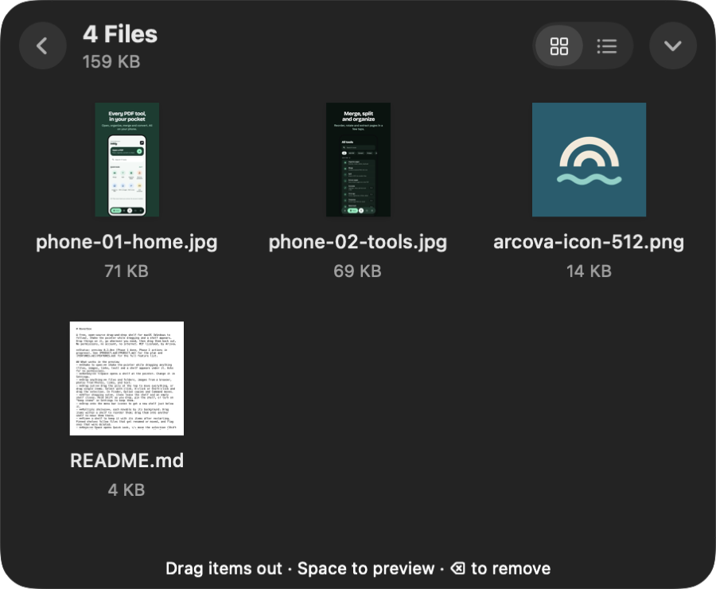

Shake, or hold still
Shake the pointer while dragging, or pause for a moment if shaking is hard, and a shelf appears right there. Or press ⌥⇧Space.
Hoverbox by Arcova
Drop files, images, links and text on it, go wherever you need, then drag them all back out. Free, open source, and it asks for no permissions.
Early preview v0.4. Free and open source under the MIT licence.

What it does
Moving files between windows, apps and Spaces is easier when you don't have to do it in one drag.
Shake the pointer while dragging, or pause for a moment if shaking is hard, and a shelf appears right there. Or press ⌥⇧Space.
Files, folders, photos, web images, links and text. Drag the pile to take everything at once, or pick just the ones you need.
Share, AirDrop, ZIP and unzip, resize, convert and compress images, and copy the text out of images and PDFs. Your originals are never changed.
Several at once, each with its own colour. Pin the ones you need again, tuck them against a screen edge, and reopen the ones you closed.
New screenshots, and new files in folders you choose, land on a shelf in the corner without interrupting you.
Right-click in Finder and choose Add to Hoverbox, use the Share menu, or copy and paste. VoiceOver hears every shelf open and every action finish.
Private by design
Hoverbox spots your shake by watching the mouse, which macOS allows without any permission. It never connects to the internet; sharing and AirDrop go through macOS itself.
Shortcuts
Questions
Yes. Everything is free: no trial, no waiting, no paid tier, no ads and no account. It's open source under the MIT licence.
No. A shelf only holds a reference to each file (or a copy, if you turn on copy mode). Actions like resize or ZIP create new files. Only Rename, Move To, or a move you make yourself when dragging out ever changes an original.
Preview builds aren't signed by Apple yet. Right-click the app and choose Open the first time, or use "Open Anyway" in System Settings › Privacy & Security. You can also build it yourself from the source.
macOS 14 Sonoma or later, on Apple silicon or Intel. A Windows version is planned.
Yes. Choose "Holding the pointer still" in Settings › Opening, or skip dragging entirely: Finder's Add to Hoverbox, the Share menu, copy and paste, and the keyboard shortcut all work.
The core works and has unit tests, but it hasn't had much real-world use yet, so expect rough edges. Please report problems on GitHub, or email arcova.apps@gmail.com.